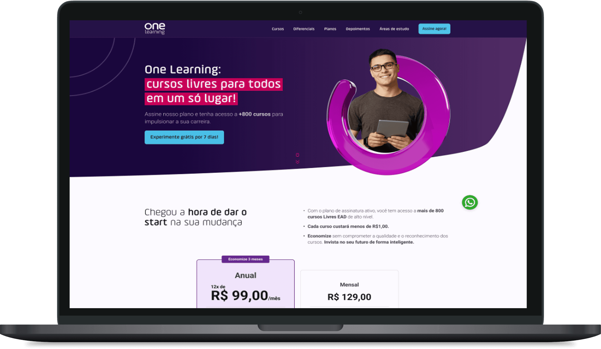
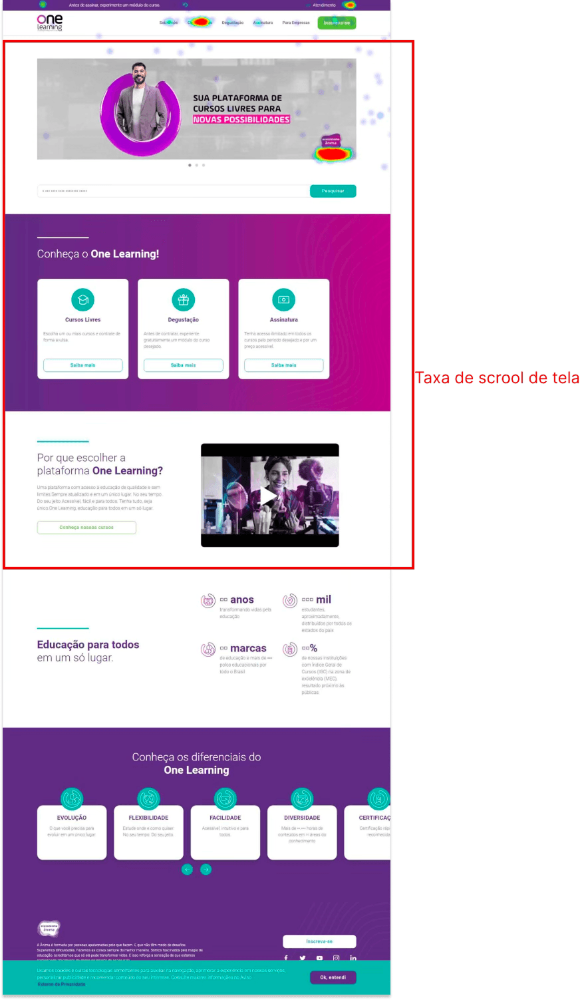
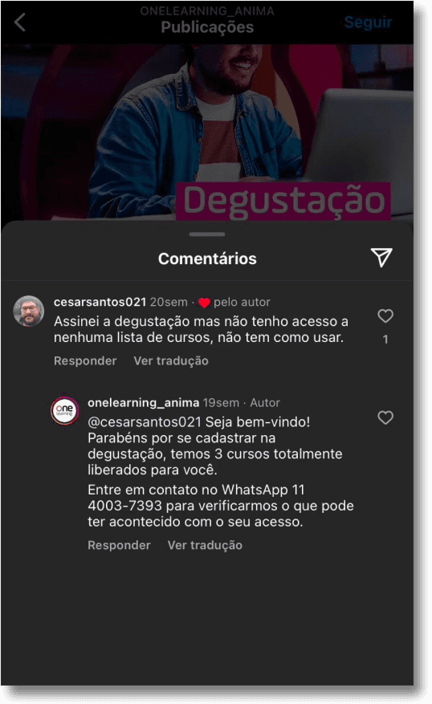
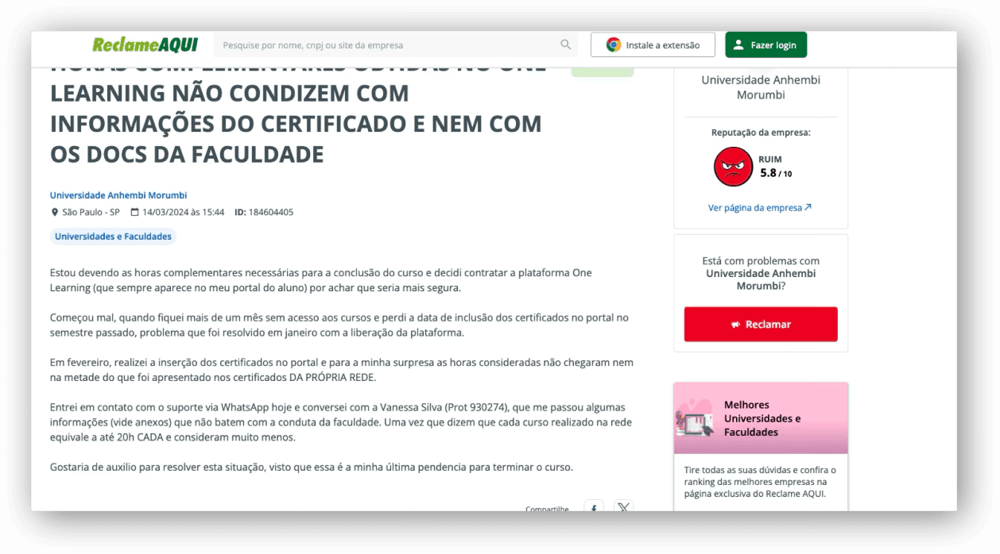
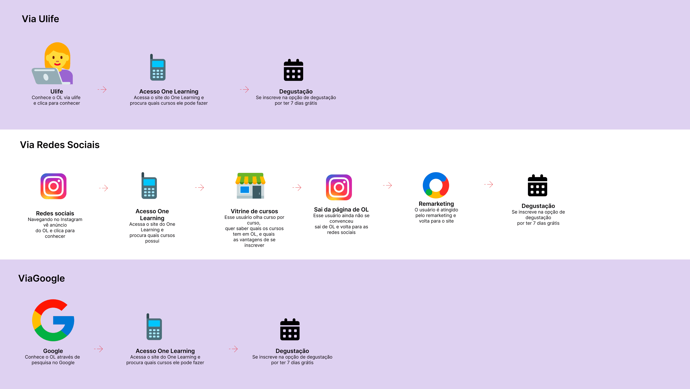
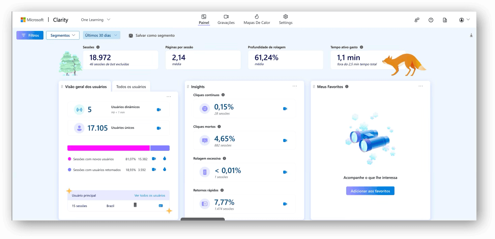
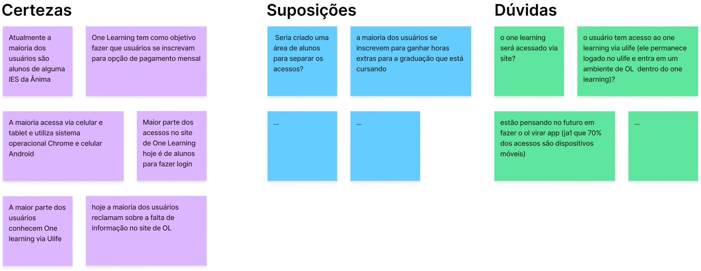
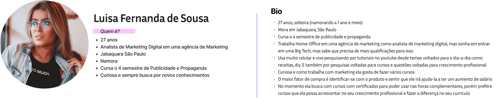

Education · Subscription strategy · Grupo Ânima
One Learning
From a course marketplace to a membership experience built around continuous learning.

Turning course access into ongoing value
With more than 900 free and paid courses, One Learning offered broad choice, but users still approached it as a place to buy one course at a time. The opportunity was to make membership value tangible and support learning over time.
Make membership value tangible
Course consumption was healthy, but it did not translate into subscription adoption or retention. Membership benefits were easy to miss, and with 73% of users accessing the platform on mobile, the experience needed to work naturally on smaller screens.
Product context
Designing for continuous learning
I led discovery through validation, combining behavioral analytics, conversion funnels, user surveys, journey mapping and competitive benchmarking. I aligned product, marketing and technology teams around a clearer membership proposition, then refined key subscription moments through prototypes and usability testing.
Selected screens
Membership journey across the product.
Selected visuals from the original project.







A clearer path to continuous learning
The redesign brought membership value into key decision points and made mobile behavior central to the experience. Prototypes and usability testing informed a clearer information architecture and a more scalable design system.
Back to homeNext case · Education · Design system